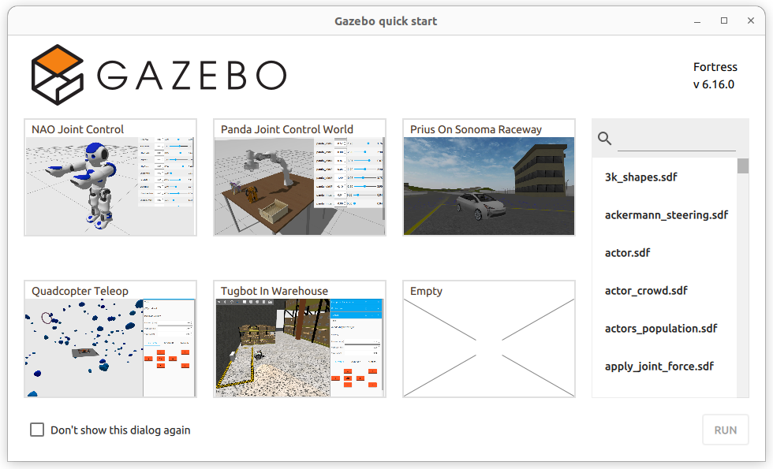

Lab 3 : ROS Workspace, Package, Publisher and Subscriber
Seneca Polytechnic SEA700 Robotics for Software Engineers
Introduction
ROS Workspace
A workspace is a directory containing ROS 2 packages. Before using ROS 2, it’s necessary to source your ROS 2 installation workspace in the terminal you plan to work in. This makes ROS 2’s packages available for you to use in that terminal.
You also have the option of sourcing an “overlay” - a secondary workspace where you can add new packages without interfering with the existing ROS 2 workspace that you’re extending, or “underlay”. Your underlay must contain the dependencies of all the packages in your overlay. Packages in your overlay will override packages in the underlay. It’s also possible to have several layers of underlays and overlays, with each successive overlay using the packages of its parent underlays.
ROS Package
A package is an organizational unit for your ROS 2 code. If you want to be able to install your code or share it with others, then you’ll need it organized in a package. With packages, you can release your ROS 2 work and allow others to build and use it easily.
Package creation in ROS 2 uses ament as its build system and colcon as its build tool. You can create a package using either CMake or Python, which are officially supported, though other build types do exist.
ROS 2 Python and CMake packages each have their own minimum required contents:
CMake
CMakeLists.txtfile that describes how to build the code within the packageinclude/<package_name>directory containing the public headers for the packagepackage.xmlfile containing meta information about the packagesrcdirectory containing the source code for the package
The simplest possible package may have a file structure that looks like:
my_package/
CMakeLists.txt
include/my_package/
package.xml
src/
Python
package.xmlfile containing meta information about the packageresource/<package_name>marker file for the packagesetup.cfgis required when a package has executables, soros2run can find themsetup.pycontaining instructions for how to install the package<package_name>- a directory with the same name as your package, used by ROS 2 tools to find your package, contains__init__.py
The simplest possible package may have a file structure that looks like:
my_package/
package.xml
resource/my_package
setup.cfg
setup.py
my_package/
A single workspace can contain as many packages as you want, each in their own folder. You can also have packages of different build types in one workspace (CMake, Python, etc.). You cannot have nested packages.
Best practice is to have a src folder within your workspace, and to create your packages in there. This keeps the top level of the workspace “clean”.
A trivial workspace might look like:
workspace_folder/
src/
cpp_package_1/
CMakeLists.txt
include/cpp_package_1/
package.xml
src/
py_package_1/
package.xml
resource/py_package_1
setup.cfg
setup.py
py_package_1/
...
cpp_package_n/
CMakeLists.txt
include/cpp_package_n/
package.xml
src/
Procedures
Install Colcon
colcon is an iteration on the ROS build tools catkin_make, catkin_make_isolated, catkin_tools and ament_tools.
- Run:
sudo apt install python3-colcon-common-extensions
Create a Workspace directory
-
Best practice is to create a new directory for every new workspace. The name doesn’t matter, but it is helpful to have it indicate the purpose of the workspace. Let’s choose the directory name
ros2_ws, for “development workspace”. Open a new terminal and run:mkdir -p ~/ros2_ws/srcAnother best practice is to put any packages in your workspace into the
srcdirectory. The above code creates asrcdirectory insideros2_ws.
Create a C++ Package
-
Navigate into
ros2_ws/src, and run the package creation command to create a simple C++ publisher and subscriber:cd ~/ros2_ws/src ros2 pkg create --build-type ament_cmake --license Apache-2.0 cpp_pubsubYour terminal will return a message verifying the creation of your package
cpp_pubsuband all its necessary files and folders.Write the publisher node
-
Navigate into
ros2_ws/src/cpp_pubsub/src. This is the directory in any CMake package where the source files containing executables belong. -
Download the example talker code by entering the following command:
wget -O publisher_member_function.cpp https://raw.githubusercontent.com/ros2/examples/humble/rclcpp/topics/minimal_publisher/member_function.cpp -
Now there will be a new file named
publisher_member_function.cpp. Open the file using your preferred text editor. Alternatively, create a.cppfile with the following:#include <chrono> #include <functional> #include <memory> #include <string> #include "rclcpp/rclcpp.hpp" #include "std_msgs/msg/string.hpp" using namespace std::chrono_literals; /* This example creates a subclass of Node and uses std::bind() to register a * member function as a callback from the timer. */ class MinimalPublisher : public rclcpp::Node { public: MinimalPublisher() : Node("minimal_publisher"), count_(0) { publisher_ = this->create_publisher<std_msgs::msg::String>("topic", 10); timer_ = this->create_wall_timer( 500ms, std::bind(&MinimalPublisher::timer_callback, this)); } private: void timer_callback() { auto message = std_msgs::msg::String(); message.data = "Hello, world! " + std::to_string(count_++); RCLCPP_INFO(this->get_logger(), "Publishing: '%s'", message.data.c_str()); publisher_->publish(message); } rclcpp::TimerBase::SharedPtr timer_; rclcpp::Publisher<std_msgs::msg::String>::SharedPtr publisher_; size_t count_; }; int main(int argc, char * argv[]) { rclcpp::init(argc, argv); rclcpp::spin(std::make_shared<MinimalPublisher>()); rclcpp::shutdown(); return 0; }The top of the code includes the standard C++ headers you will be using. After the standard C++ headers is the
rclcpp/rclcpp.hppinclude which allows you to use the most common pieces of the ROS 2 system. Last isstd_msgs/msg/string.hpp, which includes the built-in message type you will use to publish data.#include <chrono> #include <functional> #include <memory> #include <string> #include "rclcpp/rclcpp.hpp" #include "std_msgs/msg/string.hpp" using namespace std::chrono_literals;These lines represent the node’s dependencies. Recall that dependencies have to be added to
package.xmlandCMakeLists.txt, which you’ll do in the next section.The next line creates the node class
MinimalPublisherby inheriting fromrclcpp::Node. Everythisin the code is referring to the node.class MinimalPublisher : public rclcpp::NodeThe public constructor names the node
minimal_publisherand initializescount_to 0. Inside the constructor, the publisher is initialized with theStringmessage type, the topic nametopic, and the required queue size to limit messages in the event of a backup. Next,timer_is initialized, which causes thetimer_callbackfunction to be executed twice a second.public: MinimalPublisher() : Node("minimal_publisher"), count_(0) { publisher_ = this->create_publisher<std_msgs::msg::String>("topic", 10); timer_ = this->create_wall_timer( 500ms, std::bind(&MinimalPublisher::timer_callback, this)); }The
timer_callbackfunction is where the message data is set and the messages are actually published. TheRCLCPP_INFOmacro ensures every published message is printed to the console.private: void timer_callback() { auto message = std_msgs::msg::String(); message.data = "Hello, world! " + std::to_string(count_++); RCLCPP_INFO(this->get_logger(), "Publishing: '%s'", message.data.c_str()); publisher_->publish(message); }Last is the declaration of the timer, publisher, and counter fields.
rclcpp::TimerBase::SharedPtr timer_; rclcpp::Publisher<std_msgs::msg::String>::SharedPtr publisher_; size_t count_;Following the
MinimalPublisherclass ismain, where the node actually executes.rclcpp::initinitializes ROS 2, andrclcpp::spinstarts processing data from the node, including callbacks from the timer.int main(int argc, char * argv[]) { rclcpp::init(argc, argv); rclcpp::spin(std::make_shared<MinimalPublisher>()); rclcpp::shutdown(); return 0; }Add dependencies
-
Navigate one level back to the
ros2_ws/src/cpp_pubsubdirectory, where theCMakeLists.txtandpackage.xmlfiles have been created for you. Openpackage.xmlwith your text editor and make sure to fill in the<description>,<maintainer>and<license>tags:<description>Examples of minimal publisher/subscriber using rclcpp</description> <maintainer email="you@email.com">Your Name</maintainer> <license>Apache License 2.0</license> -
Add a new line after the
ament_cmakebuildtool dependency and paste the following dependencies corresponding to your node’s include statements:<depend>rclcpp</depend> <depend>std_msgs</depend>This declares the package needs rclcpp and std_msgs when its code is built and executed.
Make sure to save the file.
CMakeLists.txt
-
Now open the
CMakeLists.txtfile. Below the existing dependencyfind_package(ament_cmake REQUIRED), add the lines:find_package(rclcpp REQUIRED) find_package(std_msgs REQUIRED) -
After that, add the executable and name it
talkerso you can run your node usingros2 run:add_executable(talker src/publisher_member_function.cpp) ament_target_dependencies(talker rclcpp std_msgs) -
Finally, add the
install(TARGETS...)section under the lines above soros2 runcan find your executable:install(TARGETS talker DESTINATION lib/${PROJECT_NAME})You could build your package now, source the local setup files, and run it, but let’s create the subscriber node first so you can see the full system at work.
Write the subscriber node
-
Return to
ros2_ws/src/cpp_pubsub/srcto create the next node. Enter the following code in your terminal to download the subscriber:wget -O subscriber_member_function.cpp https://raw.githubusercontent.com/ros2/examples/humble/rclcpp/topics/minimal_subscriber/member_function.cppCheck to ensure that these files exist:
publisher_member_function.cpp subscriber_member_function.cpp -
Open the
subscriber_member_function.cppwith your text editor. Alternatively, create a.cppfile with the following:#include <memory> #include "rclcpp/rclcpp.hpp" #include "std_msgs/msg/string.hpp" using std::placeholders::_1; class MinimalSubscriber : public rclcpp::Node { public: MinimalSubscriber() : Node("minimal_subscriber") { subscription_ = this->create_subscription<std_msgs::msg::String>( "topic", 10, std::bind(&MinimalSubscriber::topic_callback, this, _1)); } private: void topic_callback(const std_msgs::msg::String & msg) const { RCLCPP_INFO(this->get_logger(), "I heard: '%s'", msg.data.c_str()); } rclcpp::Subscription<std_msgs::msg::String>::SharedPtr subscription_; }; int main(int argc, char * argv[]) { rclcpp::init(argc, argv); rclcpp::spin(std::make_shared<MinimalSubscriber>()); rclcpp::shutdown(); return 0; }The subscriber node’s code is nearly identical to the publisher’s. Now the node is named
minimal_subscriber, and the constructor uses the node’screate_subscriptionclass to execute the callback.There is no timer because the subscriber simply responds whenever data is published to the topic
topic.public: MinimalSubscriber() : Node("minimal_subscriber") { subscription_ = this->create_subscription<std_msgs::msg::String>( "topic", 10, std::bind(&MinimalSubscriber::topic_callback, this, _1)); }Recall from earlier lab that the topic name and message type used by the publisher and subscriber must match to allow them to communicate.
The
topic_callbackfunction receives the string message data published over the topic, and simply writes it to the console using theRCLCPP_INFOmacro.The only field declaration in this class is the subscription.
private: void topic_callback(const std_msgs::msg::String & msg) const { RCLCPP_INFO(this->get_logger(), "I heard: '%s'", msg.data.c_str()); } rclcpp::Subscription<std_msgs::msg::String>::SharedPtr subscription_;The
mainfunction is exactly the same, except now it spins theMinimalSubscribernode. For the publisher node, spinning meant starting the timer, but for the subscriber it simply means preparing to receive messages whenever they come.Since this node has the same dependencies as the publisher node, there’s nothing new to add to
package.xml.CMakeLists.txt
-
Reopen
CMakeLists.txtand add the executable and target for the subscriber node below the publisher’s entries.add_executable(listener src/subscriber_member_function.cpp) ament_target_dependencies(listener rclcpp std_msgs) install(TARGETS talker listener DESTINATION lib/${PROJECT_NAME})Make sure to save the file, and then your pub/sub system should be ready.
Build and Run C++ Package
-
You likely already have the
rclcppandstd_msgspackages installed as part of your ROS 2 system. It’s good practice to runrosdepin the root of your workspace (ros2_ws) to check for missing dependencies before building:cd ~/ros2_ws rosdep install -i --from-path src --rosdistro humble -yIf the
rosdepcommand is not found, run the following to install, init, and updaterosdep:pip install -U rosdep rosdep init rosdep updateIf you get a permission denied error, use
sudo.When all dependencies are met,
rosdepwill return a success message:#All required rosdeps installed successfully -
Still in the root of your workspace,
ros2_ws, build your new package:colcon build --packages-select cpp_pubsub -
Source the setup files:
. install/setup.bash -
Now run the talker node from
ros2_ws:ros2 run cpp_pubsub talkerThe terminal should start publishing info messages every 0.5 seconds, like so:
[INFO] [minimal_publisher]: Publishing: "Hello World: 0" [INFO] [minimal_publisher]: Publishing: "Hello World: 1" [INFO] [minimal_publisher]: Publishing: "Hello World: 2" [INFO] [minimal_publisher]: Publishing: "Hello World: 3" [INFO] [minimal_publisher]: Publishing: "Hello World: 4" -
Open another terminal, source the setup files from inside
ros2_wsagain, and then start the listener node:. install/setup.bash ros2 run cpp_pubsub listenerThe listener will start printing messages to the console, starting at whatever message count the publisher is on at that time, like so:
[INFO] [minimal_subscriber]: I heard: "Hello World: 10" [INFO] [minimal_subscriber]: I heard: "Hello World: 11" [INFO] [minimal_subscriber]: I heard: "Hello World: 12" [INFO] [minimal_subscriber]: I heard: "Hello World: 13" [INFO] [minimal_subscriber]: I heard: "Hello World: 14" -
Enter Ctrl+C in each terminal to stop the nodes from spinning.
Create a Python Package
-
Navigate into
ros2_ws/src, and run the package creation command to create a simple Python publisher and subscriber:ros2 pkg create --build-type ament_python --license Apache-2.0 py_pubsubYour terminal will return a message verifying the creation of your package
py_pubsuband all its necessary files and folders.Write the publisher node
-
Navigate into
ros2_ws/src/py_pubsub/py_pubsub. This directory is a Python package with the same name as the ROS 2 package it’s nested in. -
Download the example talker code by entering the following command:
wget https://raw.githubusercontent.com/ros2/examples/humble/rclpy/topics/minimal_publisher/examples_rclpy_minimal_publisher/publisher_member_function.py -
Now there will be a new file named
publisher_member_function.pyadjacent to__init__.py. Open the file using your preferred text editor. Alternatively, create a .py file with the following:import rclpy from rclpy.node import Node from std_msgs.msg import String class MinimalPublisher(Node): def __init__(self): super().__init__('minimal_publisher') self.publisher_ = self.create_publisher(String, 'topic', 10) timer_period = 0.5 # seconds self.timer = self.create_timer(timer_period, self.timer_callback) self.i = 0 def timer_callback(self): msg = String() msg.data = 'Hello World: %d' % self.i self.publisher_.publish(msg) self.get_logger().info('Publishing: "%s"' % msg.data) self.i += 1 def main(args=None): rclpy.init(args=args) minimal_publisher = MinimalPublisher() rclpy.spin(minimal_publisher) # Destroy the node explicitly # (optional - otherwise it will be done automatically # when the garbage collector destroys the node object) minimal_publisher.destroy_node() rclpy.shutdown() if __name__ == '__main__': main()The first lines of code after the comments import
rclpyso itsNodeclass can be used.import rclpy from rclpy.node import NodeThe next statement imports the built-in string message type that the node uses to structure the data that it passes on the topic.
from std_msgs.msg import StringThese lines represent the node’s dependencies. Recall that dependencies have to be added to
package.xml, which you’ll do in the next section.Next, the
MinimalPublisherclass is created, which inherits from (or is a subclass of)Node.class MinimalPublisher(Node):Following is the definition of the class’s constructor.
super().__init__calls theNodeclass’s constructor and gives it your node name, in this caseminimal_publisher.create_publisherdeclares that the node publishes messages of typeString(imported from the std_msgs.msg module), over a topic namedtopic, and that the “queue size” is 10. Queue size is a required QoS (quality of service) setting that limits the amount of queued messages if a subscriber is not receiving them fast enough.Next, a timer is created with a callback to execute every 0.5 seconds.
self.iis a counter used in the callback.def __init__(self): super().__init__('minimal_publisher') self.publisher_ = self.create_publisher(String, 'topic', 10) timer_period = 0.5 # seconds self.timer = self.create_timer(timer_period, self.timer_callback) self.i = 0timer_callbackcreates a message with the counter value appended, and publishes it to the console withget_logger().info.def timer_callback(self): msg = String() msg.data = 'Hello World: %d' % self.i self.publisher_.publish(msg) self.get_logger().info('Publishing: "%s"' % msg.data) self.i += 1Lastly, the main function is defined.
def main(args=None): rclpy.init(args=args) minimal_publisher = MinimalPublisher() rclpy.spin(minimal_publisher) # Destroy the node explicitly # (optional - otherwise it will be done automatically # when the garbage collector destroys the node object) minimal_publisher.destroy_node() rclpy.shutdown()First the
rclpylibrary is initialized, then the node is created, and then it “spins” the node so its callbacks are called.Add dependencies
-
Navigate one level back to the
ros2_ws/src/py_pubsubdirectory, where thesetup.py,setup.cfg, andpackage.xmlfiles have been created for you. Openpackage.xmlwith your text editor and make sure to fill in the<description>,<maintainer>and<license>tags:<description>Examples of minimal publisher/subscriber using rclpy</description> <maintainer email="you@email.com">Your Name</maintainer> <license>Apache License 2.0</license> -
After the lines above, add the following dependencies corresponding to your node’s import statements:
<exec_depend>rclpy</exec_depend> <exec_depend>std_msgs</exec_depend>This declares the package needs
rclpyandstd_msgswhen its code is executed.Make sure to save the file.
Add an entry point
-
Open the
setup.pyfile. Again, match themaintainer,maintainer_email,descriptionandlicensefields to yourpackage.xml:maintainer='YourName', maintainer_email='you@email.com', description='Examples of minimal publisher/subscriber using rclpy', license='Apache License 2.0', -
Add the following line within the
console_scriptsbrackets of theentry_pointsfield:entry_points={ 'console_scripts': [ 'talker = py_pubsub.publisher_member_function:main', ], },Don’t forget to save.
Check setup.cfg
-
The contents of the
setup.cfgfile should be correctly populated automatically, like so:[develop] script_dir=$base/lib/py_pubsub [install] install_scripts=$base/lib/py_pubsubThis is simply telling setuptools to put your executables in
lib, becauseros2 runwill look for them there.You could build your package now, source the local setup files, and run it, but let’s create the subscriber node first so you can see the full system at work.
Write the subscriber node
-
Return to
ros2_ws/src/py_pubsub/py_pubsubto create the next node. Enter the following code in your terminal:wget https://raw.githubusercontent.com/ros2/examples/humble/rclpy/topics/minimal_subscriber/examples_rclpy_minimal_subscriber/subscriber_member_function.pyNow the directory should have these files:
__init__.py publisher_member_function.py subscriber_member_function.py -
Open the
subscriber_member_function.pywith your text editor. Alternatively, create a .py file with the following:import rclpy from rclpy.node import Node from std_msgs.msg import String class MinimalSubscriber(Node): def __init__(self): super().__init__('minimal_subscriber') self.subscription = self.create_subscription( String, 'topic', self.listener_callback, 10) self.subscription # prevent unused variable warning def listener_callback(self, msg): self.get_logger().info('I heard: "%s"' % msg.data) def main(args=None): rclpy.init(args=args) minimal_subscriber = MinimalSubscriber() rclpy.spin(minimal_subscriber) # Destroy the node explicitly # (optional - otherwise it will be done automatically # when the garbage collector destroys the node object) minimal_subscriber.destroy_node() rclpy.shutdown() if __name__ == '__main__': main()The subscriber node’s code is nearly identical to the publisher’s. The constructor creates a subscriber with the same arguments as the publisher. Recall from earlier lab that the topic name and message type used by the publisher and subscriber must match to allow them to communicate.
self.subscription = self.create_subscription( String, 'topic', self.listener_callback, 10)The subscriber’s constructor and callback don’t include any timer definition, because it doesn’t need one. Its callback gets called as soon as it receives a message.
The callback definition simply prints an info message to the console, along with the data it received. Recall that the publisher defines
msg.data = 'Hello World: %d' % self.idef listener_callback(self, msg): self.get_logger().info('I heard: "%s"' % msg.data)The
maindefinition is almost exactly the same, replacing the creation and spinning of the publisher with the subscriber.minimal_subscriber = MinimalSubscriber() rclpy.spin(minimal_subscriber)Since this node has the same dependencies as the publisher, there’s nothing new to add to
package.xml. Thesetup.cfgfile can also remain untouched.Add an entry point
-
Reopen
setup.pyand add the entry point for the subscriber node below the publisher’s entry point. Theentry_pointsfield should now look like this:entry_points={ 'console_scripts': [ 'talker = py_pubsub.publisher_member_function:main', 'listener = py_pubsub.subscriber_member_function:main', ], },Make sure to save the file, and then your pub/sub system should be ready.
Build and run Python Package
-
It’s good practice to run rosdep in the root of your workspace (
ros2_ws) to check for missing dependencies before building:rosdep install -i --from-path src --rosdistro humble -yIf the
rosdepcommand is not found, run the following to install, init, and updaterosdep:pip install -U rosdep rosdep init rosdep updateIf you get a permission denied error, use
sudo.When all dependencies are met,
rosdepwill return a success message:#All required rosdeps installed successfully -
Still in the root of your workspace,
ros2_ws, build your new package:colcon build --packages-select py_pubsubIf you want to build all the packages, just run
colcon buildwithout the option. -
Open a new terminal, navigate to
ros2_ws, and source the setup files:source install/setup.bash -
Now run the talker node:
ros2 run py_pubsub talkerThe terminal should start publishing info messages every 0.5 seconds, like so:
[INFO] [minimal_publisher]: Publishing: "Hello World: 0" [INFO] [minimal_publisher]: Publishing: "Hello World: 1" [INFO] [minimal_publisher]: Publishing: "Hello World: 2" [INFO] [minimal_publisher]: Publishing: "Hello World: 3" [INFO] [minimal_publisher]: Publishing: "Hello World: 4" ... -
Open another terminal, source the setup files from inside
ros2_wsagain, and then start the listener node:ros2 run py_pubsub listenerThe listener will start printing messages to the console, starting at whatever message count the publisher is on at that time, like so:
[INFO] [minimal_subscriber]: I heard: "Hello World: 10" [INFO] [minimal_subscriber]: I heard: "Hello World: 11" [INFO] [minimal_subscriber]: I heard: "Hello World: 12" [INFO] [minimal_subscriber]: I heard: "Hello World: 13" [INFO] [minimal_subscriber]: I heard: "Hello World: 14" -
Stop the listener and try to run the C++ listener from earlier:
ros2 run cpp_pubsub listenerYou should see a similar same output.
-
Enter
Ctrl+Cin each terminal to stop the nodes from spinning.
Install Gazebo
After being familiar with ROS, we'll now install the Gazebo simulation environment.
-
Following the instruction to install Gazebo Fortress. Each Gazebo version works with a specific version of ROS.
-
Once installed, start Gazebo with the following command to ensure it's functional:
ign gazebo
Figure 3.1 Gazebo Quick Start
-
Try to start one of the senario from the quick start screen.
-
Afterward, open another terminal and run the following command to see all the topics:
ign topic -lDo you notice any similarity?
We won't be able to connect ROS directly with Gazebo yet. That will be the topic of Lab 4 and 5.
Lab Question
-
Write a new controller (C++ or Python) for turtlesim that replace
turtle_teleop_key. Since the turtlesim node is the subscriber in this example, you’ll only need to write a single publisher node.Create a new package called
lab3_turtlesim. You can create a new workspace calledlab3_wsor use your existing workspace.ros2 pkg create --build-type ament_cmake --license Apache-2.0 lab3_turtlesim --dependencies rclcpp std_msgs geometry_msgs turtlesimor
ros2 pkg create --build-type ament_python --license Apache-2.0 lab3_turtlesim --dependencies rclpy std_msgs geometry_msgs turtlesimYour node should do the following:
- Accept a command line argument specifying the name of the turtle it should control.
- Running
ros2 lab3_turtlesim turtle_controller.cpp turtle1orros2 lab3_turtlesim turtle_controller.py turtle1will start a controller node that controls turtle1.
- Running
- Use
w,a,s,dto control the turtle by publish velocity control messages on the appropriate topic whenever the user presses those keys on the keyboard, as in the originalturtle_teleop_key. Capturing individual keystrokes from the terminal is slightly complicated, so feel free to use input() instead.
To test, spawn multiple turtles and open multiple instances of your new turtle controller node, each linked to a different turtle.
- Accept a command line argument specifying the name of the turtle it should control.
Once you've completed all the above steps, ask the lab professor or instructor over and demostrate that you've completed the lab and written down all your observations. You might be asked to explain some of the concepts you've learned in this lab.
Reference
- ROS 2 Documentation: Humble
- EECS 106A Labs